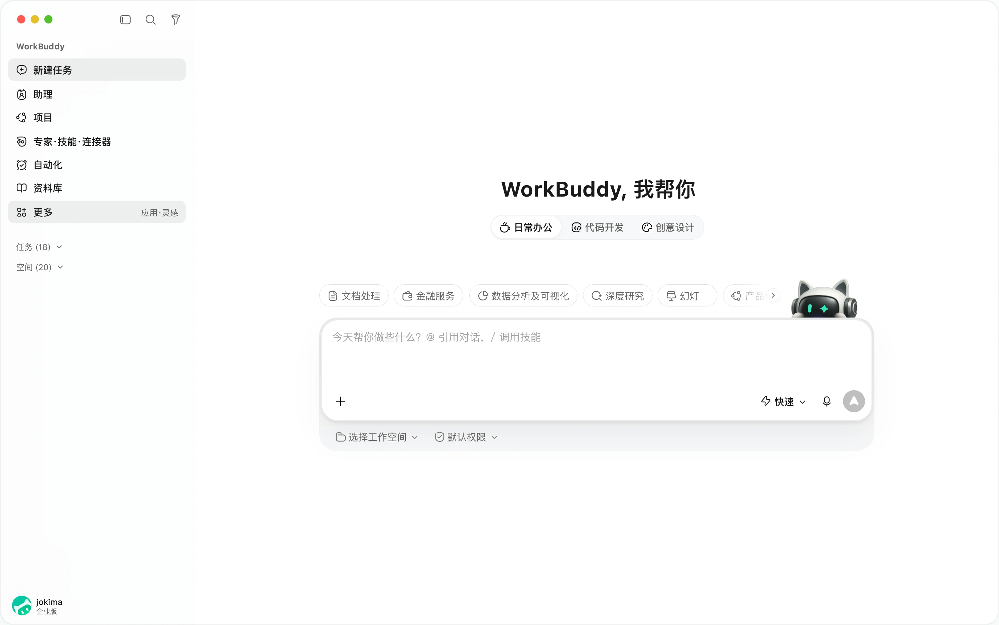
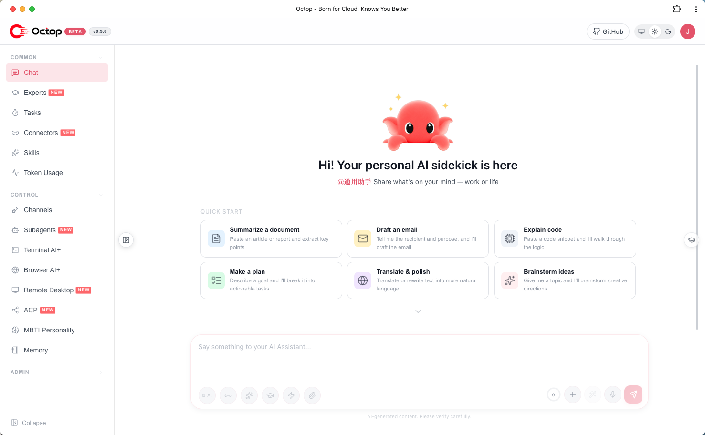

从 WorkBuddy 到 Octop：腾讯 Agent 矩阵的两条路线，开源自托管与云端成品对比
同一个腾讯，两个 Agent 产品，路线完全相反。
WorkBuddy 是云端 SaaS 成品——注册账号就能用，按坐席计费，数据走腾讯服务器，面向企业职场全职能角色。Octop 是 MIT 开源自托管框架——自己部署到内网，数据全部留在本地，可以改源码换存储接自研系统，面向开发者和有运维能力的小团队。
这两个产品都挂在腾讯云体系下，都叫「Agent 工作台」，但设计哲学几乎对立。WorkBuddy 卖的是「省事」，Octop 卖的是「可控」。
更值得注意的是时间线：WorkBuddy 2026 年 3 月已经对外曝光，负责人汪晟杰在华尔街见闻专访中明确说了「百分之百自研，没有用过任何一行 OpenClaw 源码」；Octop 则是在 2026 年 9 月 14 日正式发布 v1.0.0 GA，10 月 25 日已迭代到 v1.0.3b1，GitHub 上 11.3k Star / 1.5k Fork。
腾讯为什么要同时做这两个？这不是重复造轮子，而是两条完全不同的赛道。
一、产品定位：一个卖「省事」，一个卖「可控」
WorkBuddy 的官方定位是「全场景职场 AI 智能体桌面工作台」。它的产品矩阵包括 CodeBuddy（AI 原生编程工具）、WorkBuddy（通用办公智能体）、WorkBuddy Managed Agents（云端托管 Agent 运行服务）。三者账户互通、权限共管，企业通过控制台或 API 一键把 Agent 下发到员工端使用。
WorkBuddy 的目标用户很明确：职场全职能角色。不需要懂 Docker，不需要运维，不需要配模型 API Key。企业 IT 在控制台配置好 Skill、模型、连接器，员工登录就能用。

上图是登录后的 WorkBuddy 应用界面：员工打开就是对话式工作台，不需要自己搭环境、配模型，这是典型的 To B 云端 SaaS 产品形态。
图片来源：WorkBuddy 官网
Octop 的定位完全不同。官方 README 的开场白是：
"A smarter, self-hosted AI assistant — multi-user, multi-agent. A digital life form that can operate in parallel."
中文版本说得更直接：「支持多用户、多 Agent 的自托管 AI 助手——更聪明，更懂你。」
关键词是自托管和开源。Octop 的前身是 LightClaw ACE（根据 JOTO AI 报道），采用 MIT 协议开源。你部署在个人电脑、NAS 或内网服务器上，整套多用户、多智能体 AI 中枢连同数据全部留在本地。模型服务商完全由自己选定，不受平台绑定。

上图是 Octop 部署后的聊天界面，整套服务跑在你自己的机器上。它不讲市场份额，讲的是「这是你自己机器上的东西」。
一句话总结两者差异：
- WorkBuddy：云端 SaaS 成品，拿来即用，按量付费
- Octop：开源自托管框架，本地部署，模型自主权交给用户
二、技术架构：两套 Harness，不同底座
WorkBuddy 的技术底座是腾讯自研的 WorkBuddy Harness 内核。根据官方文档，WMA（WorkBuddy Managed Agents）将「Harness 内核 + 云端 Runtime」一体化交付，企业只需通过 API / SDK 或可视化控制台接入业务逻辑。WorkBuddy 负责人在 21 财经采访中强调，WorkBuddy 百分之百自研，基于 CodeBuddy 的整套基建——「AI 驱动、自主完成任务这套框架我们自己有，不需要借」。
Octop 的技术底座是 Octop Harness，一个基于 LangChain deepagents 库构建的生产级 Agent 运行时。Octop Harness 的 README 非常坦诚地致敬了 deepagents：
"A tribute to deepagents. octop-harness stands on the shoulders of deepagents (by the LangChain team)."
Octop Harness 在 deepagents 之上封装了：多供应商模型路由（OpenAI / Anthropic / AWS Bedrock + 17 个可编辑预设）、分层记忆（octop-memory，L0→L3 蒸馏）、浏览器自动化（octop-browser）、Web 搜索、MCP 工具、多 Agent 注册表、ACP 集成、PII 脱敏和工具护栏。
| 维度 | WorkBuddy | Octop |
|---|---|---|
| Agent 内核 | 腾讯自研 WorkBuddy Harness | 基于 LangChain deepagents 封装 |
| 模型路由 | 平台内配置，企业级统一管理 | 17+ 预设供应商，按 Agent 独立配置 |
| 记忆系统 | 平台管理 | octop-memory 分层召回，随工作区迁移 |
| 部署形态 | 云端沙箱（1 Session : 1 沙箱） | 单进程，SQLite/PostgreSQL，可接 S3/COS |
| 协议支持 | OpenAPI / A2A / MCP / IM Bot | ACP 双向 / MCP / HTTP / SSE / WebSocket |
这里有一个值得注意的差异：WorkBuddy 的云端沙箱是「1 Session : 1 沙箱」的强隔离模型，支持百万级并发、秒级 CoW Fork、长任务中断原地续跑。Octop 的单进程模型更轻量，靠 SQLite WAL 或 PostgreSQL 做状态持久化，重启后从数据库重建状态。两者解决的是不同规模的问题——WorkBuddy 面向企业级并发，Octop 面向本地/小团队场景。
三、数据主权：最核心的差异
这是两个产品最本质的区别。
WorkBuddy 是 SaaS 产品，数据流转必然经过腾讯的服务器。对于大多数中小团队和个人用户来说这不是问题，反而省去了运维成本。但如果业务数据涉及个人隐私、商业机密、金融合规或政务要求，SaaS 化的 AI 工作台在合规审查上很难通过。
Octop 的自托管特性直接解决了这个问题。所有 Agent 的推理请求、上下文数据、工具调用记录、知识库文档全部留在本地 ~/.octop/ 目录下。如果连外部大模型的 API 都不想调，还可以接本地部署的开源模型（如 Ollama），虽然效果会打折扣，但数据闭环是完整的。
云帆数科的文章里有一个具体的案例：一个医疗行业团队用 Octop 搭建内部知识库 Agent，所有病历数据在内网处理，外部模型只用来做通用语言理解，敏感信息在发送给模型之前会被脱敏。这类场景用 WorkBuddy 在架构上无法实现。
Octop 在安全层面的设计也呼应了这个定位：
- JWT 多用户隔离，按用户分配 Agent 与工作区
- 工具审批：高风险工具或 Shell 命令需显式确认
- Shell 命令护栏：
~/.octop/security/tool_guard/下用户可编辑允许/拒绝规则 - PII 脱敏：离开工作区前自动脱敏敏感数据
- 密钥加密保存（v1.0.3b1 起），旧明文仍可读出
四、定制深度：配置级扩展 vs 源码级修改
WorkBuddy 提供了 Skill 机制和连接器配置，企业可以通过控制台扩展 Agent 能力。但配置能做的事情有边界——一旦需要修改 Agent 的核心调度逻辑、替换记忆存储后端、或改变工具调用的决策流程，WorkBuddy 不给这个口子。
Octop 是开源的，意味着可以直接改源码。云帆数科文章中提到一个真实集成案例：团队把默认的向量存储从内置 SQLite 换成已有的 Milvus 集群，同时调整了工具调用的超时和重试策略以适配内部 API 的响应速度。这种「改工具」的能力在特定场景下是刚需。
Octop 的可定制性体现在多个层面：
- 工作区后端可插拔：本地磁盘、Docker 沙箱、PostgreSQL、COS/S3，与控制面数据库分离
- 模型供应商自由切换：OpenAI 兼容 API、DashScope（千问）、Ollama 等，按 Agent 独立配置
- 连接器生态开放：内置腾讯文档、腾讯会议、企查查、Notion、滴答清单、OpenAlex、飞书 CLI、企业微信 CLI、Agent Mail、Obsidian、WeKnora、Dify 等，支持自定义 MCP Server
- 插件机制：第三方插件安装/启用，内置插件封装
- ACP 双向集成：外部 IDE/终端 AI 调用你的 Octop Agent；Octop 委派给 OpenCode / Claude Code / Codex / Cursor / Kimi Code
五、ACP 协议：Octop 独有的「Agent 互调」能力
ACP（Agent Client Protocol）是 Octop 目前最独特的功能之一，WorkBuddy 暂不支持。
ACP 支持两个方向：
入站：外部工具使用你的 Octop Agent。一条 octop acp --agent main 命令就能把 Octop 变成 Zed、OpenCode 等 IDE 的 stdio ACP 服务。
出站：Octop 委派给外部编程 Agent。在控制台配置 Runner（OpenCode、CodeBuddy、Claude Code、Codex），然后在对话中直接委派任务。
JOTO AI 的报道中有一个实际测试：在 Octop 中提出「调用本机的 Pi Agent，查一下 GitHub 上最近爆火的项目并总结一下」，Octop 会委派给外部 Agent 执行，自己负责最后的验收核验。
这种「统一入口，多 Agent 协作」的模式，适合已经使用多个编程 Agent、希望把它们接进统一任务流的开发者。WorkBuddy 的 ACP 能力在官方文档中尚未出现，从 Woshipm 的实测文章来看，「目前 WorkBuddy 暂不支持外部智能体调用」。
六、IM 通道与腾讯生态整合
两者都支持飞书、钉钉、企业微信等主流 IM 通道，但侧重不同。
WorkBuddy 的优势在于腾讯生态深度整合。作为腾讯自家产品，它与腾讯文档、腾讯会议、企业微信的打通是原生的、无缝的。企业版提供统一身份、企业 Skill、企业专家、企业智能体、企业模型配置、安全审计等一整套企业级治理能力。
Octop 的 IM 通道更开放：飞书、钉钉、QQ、微信、企业微信、Telegram、Discord，还支持 OIDC/LDAP SSO 登录。连接器生态覆盖腾讯全家桶（文档、会议、新闻），也支持 Notion、Obsidian、WeKnora、Dify 等非腾讯产品。对于非腾讯生态的企业，Octop 的通道选择面更广。
七、成本模型：订阅制 vs 自托管
WorkBuddy 的商业模式是订阅制：
- 旗舰版：198 元/人/月，1 席位起，共享网络多租户逻辑隔离
- 专享版：316 元/人/月，100 席位起，云端专属资源池 + VPC
- 企业私有化版：300 席位起，自备算力 & 模型服务，数据不出域
Octop 是开源软件，本身不收费。成本主要是服务器 + 模型 API 调用。云帆数科文章里算了一笔账：20 人团队如果用 WorkBuddy 企业版，一年订阅费大概几万块；用 Octop 自托管一台 8 核 16G 云服务器加按量付费模型 API，一年不到一万。
但这个账不能只看钱。Octop 的自托管有隐性成本：需要有人懂 Docker、数据库、反向代理等基础设施。如果团队里没有人有运维能力，自托管的隐性成本会很高。
八、迭代节奏与社区
Octop 的迭代速度非常快。从 CHANGELOG 来看：
- v0.9.x（2026 年 8 月）：周更节奏，快速迭代知识库、OIDC、RBAC、专家市场、ACP Runner、备份恢复、远程手机、FnOS 打包等功能
- v1.0.0 GA：2026 年 9 月 14 日
- v1.0.2：2026 年 10 月 18 日（两实例云端协同、AgentTeams 组队、企查查/OpenAlex/语雀/Obsidian 连接器、LDAP 登录、记忆手动编辑）
- v1.0.3b1：2026 年 10 月 25 日（用户组权限细化、技能包共享、DeepSeek/元宝搜索、OpenAI Responses API）
从 GA 到 v1.0.3b1 只用了 41 天，迭代了 3 个正式版本。GitHub 上 439 个 open issues、362 个 open PRs，社区活跃度很高。
WorkBuddy 的迭代节奏相对不透明——作为 SaaS 产品，它走的是企业级产品发布路线，版本更新通过控制台通知而非公开 CHANGELOG。
九、腾讯 Agent 矩阵全景
把视野拉远，腾讯目前的 Agent 产品线是这样的：
- WorkBuddy（腾讯云）：云端办公智能体工作台，复杂工作流、文档处理
- Octop（腾讯云）：开源本地多 Agent 中枢，面向技术玩家、小团队私有化部署
- QClaw（电脑管家）：微信远程操控电脑，在外通过微信下发指令
- Marvis（应用宝）：系统级 Agent，主打本地文件、电脑底层管理
同一家公司，多条 Agent 产品线并行推进：云端 SaaS、本地私有化、微信远程、系统底层四条路线同时下注。一边做面向普通用户的成品服务，一边把底层多 Agent 框架开源给开发者。
十、选型指南：三个问题决定该用哪个
云帆数科的文章里有一个很实用的选型框架，三个问题：
1. 数据能不能出内网？
如果业务数据涉及个人隐私、商业机密、金融/医疗/政务合规，SaaS 化的 WorkBuddy 很难通过。Octop 的自托管让你完全控制数据存储和流转路径。答案是否定的，选 Octop。
2. 团队有没有运维能力？
WorkBuddy 开箱即用，注册账号就能开始，不需要任何运维投入。Octop 需要自己部署、配置、维护。如果团队里没有人熟悉 Docker、数据库、反向代理，自托管的隐性成本会很高。答案是否定的，选 WorkBuddy。
3. 需求是不是足够特殊到需要改源码？
如果你的需求是通用的（写周报、做 PPT、查资料、定时推送），WorkBuddy 的功能已经覆盖。如果需求很特殊——要对接自研内部系统、替换向量存储、嵌入现有运维平台——Octop 的定制能力是刚需。答案是「是」，选 Octop。
三个答案都是「否」（数据能出网、没有运维能力、需求通用），选 WorkBuddy。 有一个答案是「是」（数据不能出网、有运维能力、需要深度定制），选 Octop。
小结
Octop 和 WorkBuddy 不是竞争关系，是互补关系。WorkBuddy 解决的是「企业想用 AI Agent 但不想折腾」的问题，Octop 解决的是「想用 AI Agent 但数据不能出内网 / 需要深度定制」的问题。
对普通职场用户，WorkBuddy 是更务实的选择。对开发者和有数据合规要求的小团队，Octop 的开源 + 自托管 + 源码可控组合，是目前国内 Agent 框架里最完整的选项之一。
腾讯同时做这两条路线，说明它既看到了 SaaS 市场的确定性，也看到了自托管 + 开源生态的长期价值。对行业来说，这其实是一个好信号——同一个技术底座（Agent Harness），通过不同的产品化路径，服务不同层次的用户。
免责声明
本文基于公开资料整理，包括 GitHub 仓库、腾讯云官方文档、媒体报道及社区讨论。Octop 为开源项目，功能迭代较快，部分功能可能随版本更新而变化。WorkBuddy 企业版定价和特性以腾讯云官网最新公告为准。本文不构成投资或采购建议。
参考来源
- TencentCloud/Octop — GitHub 仓库（README、CHANGELOG、架构文档）
- Octop 官网（产品首页与控制台界面示意）
- TencentCloud/octop-harness — GitHub 仓库（Octop Harness Agent 运行时）
- 腾讯云 — WorkBuddy Enterprise 产品介绍
- 腾讯云 — 腾讯企业智能体 WorkBuddy Enterprise（产品矩阵与版本对比）
- 人人都是产品经理 — 腾讯又放大招！开源版 WorkBuddy 来了，实测 Octop 到底有多强？（2026-10-21）
- JOTO AI — 腾讯再出 Agent：Octop 开源！内部 Agent 军团混战，路线完全分化（2026-09-17）
- 华尔街见闻 — 对话腾讯 WorkBuddy 负责人：一个想对标 Cowork 的产品野心（2026-03-13）
- 21财经 — 对话腾讯版「龙虾」负责人：它不是 OpenClaw（2026-03-15）
- 云帆数科 — 腾讯为何开源 Octop？自托管 AI Agent 框架与 WorkBuddy 选型对比（2026-10-25）
相关阅读
- 从 LLM 到 Agent：ChatGPT 对话范式正在消亡
- MCP vs A2A：AI Agent 协议深度对比
- 企业 AI Agent 部署指南
- Agent 治理与可观测性的隐藏成本
- Dify vs Coze vs RAGFlow vs n8n vs FastGPT 对比
推荐搭配装备
善其事，利其器。以下硬件能最大化你的AI体验👇
🔗 通过以上链接购买可支持本站持续运营 🙏